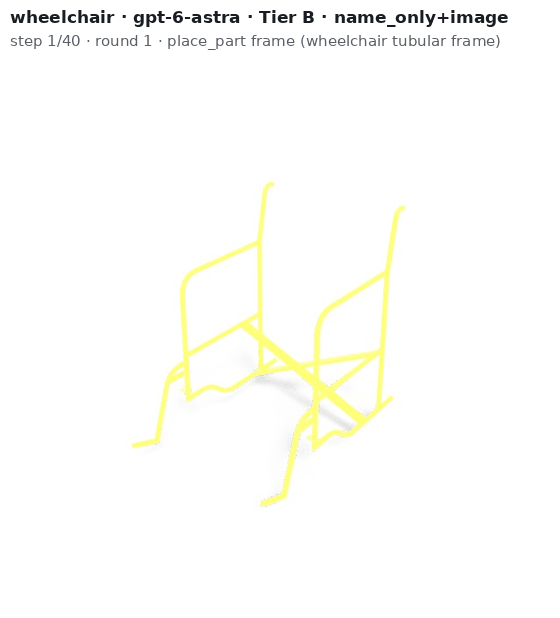

LMBuild asks a system to build a real object, such as an office desk, a wheelchair, a scissor car jack, a 3D printer or a LEGO fire engine, as an assembly of parts. The agent picks catalogue parts or creates new ones and declares what each part is, what it is made of, how the object moves and in what order it is assembled. We then score the result as a physical product, not as a picture.
The agent receives the object's name and an in-the-wild photo. Through a tool environment it lists and inspects catalogue parts, creates new parts from code, places them, declares joints, materials and an assembly order, renders its work and revises it over up to three review rounds. Every frame on the right is one tool call that changed the design; the caption gives the step and the call.
Object name, an in-the-wild photo, and a mixed catalogue of real parts from the reference and from other objects.
A catalogue only, B catalogue plus part creation (main setting), C creation only.
Parts with roles and materials, joints with axes and ranges, and an executable assembly sequence.
A reference assembly with joints, plus Wikipedia/Wikidata-cited parts, attributes, subsystems and kinematics.

A design is scored as a product. Lower levels ask whether it stands; higher levels ask whether it is the right object and whether it could be built and used.
Each animation replays one episode: every frame is the design after a tool call that changed it (placing, creating or moving a part, declaring a joint), rendered with one colour per part.
Declared joints are driven through their ranges: drawers slide, doors and lids swing, a fan oscillates, an excavator slews. Affordance and Operability check that these motions are the ones the object needs.